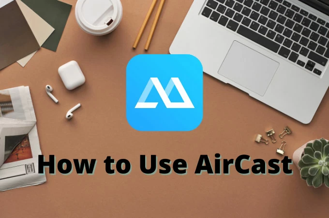

把安卓手机画面投到电脑上的第三天，我终于放弃了 USB 线
投屏工具用过不少，但 ApowerMirror 是我见过最像"瑞士军刀"的那一个——同一套客户端里塞了 LAN 投屏、反向控制、甚至跨云互投，三天体验下来有惊喜也有槽点。
说实话，我本来只是想找个能把安卓手机屏幕投到笔记本上的工具，用来录一些 App 操作的演示视频。之前试过 scrcpy，命令行大佬确实香，但每次插拔 USB、找设备号、敲命令，一套下来至少五分钟，而且偶尔会莫名其妙连不上。朋友说你去ApowerMirror官网看看，装好点两下就完事了。
我是抱着"又一个投屏 App"的心态装的。安装包从ApowerMirror下载拿的，体积不大，Windows 桌面端双击运行就一路"下一步"，手机端在应用商店搜名字直接装。打开之后界面也挺清爽——左边是设备列表，中间一个大大的投屏按钮，右上角几个设置齿轮，不像某些投屏软件一上来先弹三个广告窗口让你开会员。

连接：比想象中简单，但也有坑
第一次连接我选了 WiFi 模式。前提是手机和电脑在同一个局域网——这是所有本地投屏的基本盘，没什么好说的。手机 App 打开后会自动扫同一网络里的桌面端，两秒钟就搜到了，点一下"投屏"，手机上弹个确认框选"立即开始"，画面瞬间就出来了。
但我很快遇到第一个坑：家里路由器是双频的，手机连的是 5GHz，电脑连的是 2.4GHz，虽然都叫"同一个 WiFi"，但它们其实不在同一个子网里，App 怎么搜都搜不到。这时候才搞明白"同一网络"指的是同一个 SSID 下的同一个频段，或者至少路由器开了 AP 隔离关闭。把手机切到 2.4G，重开 App，搞定。
WiFi 投屏的延迟其实比我预期的低。录演示视频完全够用，甚至试过用它来玩节奏稍微慢一点的卡牌游戏，操作反馈没感觉到明显滞后。不过画面质感嘛，默认设置下有点糊，桌面端设置里调一下分辨率和码率就清楚多了——1080P 最高码率跑起来，画面几乎和直接看手机一样锐利，但代价是 CPU 占用会上去，老机器可能顶不住。
USB 模式我也试了一次。手机开 USB 调试、插上数据线，桌面端立刻就识别到设备了。说实话 USB 连接比 WiFi 更稳，画面掉帧的情况从来没出现过，而且手机屏幕熄灭的时候也能持续投出——WiFi 模式下手机锁屏了投屏会自动断。但 USB 的麻烦是每次都要插线，对于我这种经常在客厅、书房之间挪笔记本的人来说，还是 WiFi 更自由。
真正让我惊讶的功能：不止是投屏
本来以为这就是个投屏器，结果用着用着发现还有几个功能挺有意思。
第一个是反向控制。投屏通常是"手机画面投到电脑上看着"，但它能反过来——用电脑的鼠标键盘直接操作安卓手机。我第一次点这个按钮的时候，以为是个噱头，结果鼠标移到投出来的手机画面上，点一下居然真的能点开 App，滚轮能滑页面，键盘输入直接出现在手机的输入框里。这个功能的实用场景立刻浮现出来了：手机上要输一大段文字的时候，用电脑键盘打比在手机上戳快十倍；或者要演示某个需要多次点击的操作，直接用鼠标点，录出来的视频也更流畅。
不过反向控制需要在安卓端额外授权——无障碍服务。系统会弹一串警告，说这个权限能监控你的操作之类的，得手动去系统设置里找到对应的服务打开。而且手机每次重启之后这个权限会被系统回收，得重新开一遍。这点确实烦人，安全机制没办法，但体验上打了点折扣。
第二个是AirCast 云投屏。这是唯一一个不走局域网的连接方式——哪怕手机在公司、电脑在家里，只要两台设备都登录了同一个账号，输入 AirCast 码就能互投画面。我没真的跨城试过，但在公司里用自己手机投家里电脑试了一下，居然真的连上了，延迟比局域网稍高一点，但画面声音都能同步过去。代价是按时长计费，不是免费的，而且需要两端都更新到比较新的版本，旧版本根本找不到这个入口。适合确实有跨网络需求的人，比如远程给别人演示手机操作，但如果你只是家里用用，老实走 LAN 模式更划算。

第三个是手机投电视。客厅电视装了它的 TV 端，手机上点一下就能把视频、照片甚至整个屏幕投上去看。这个功能现在很多电视自带的投屏也能做，但它的好处是安卓声音也能一起投到电视上——很多电视自带的投屏只传画面不传声音，或者声音从手机出来，体验很割裂。用它投的时候声音直接从电视音响出来，看视频舒服多了。
哪些地方让我觉得别扭
说点不好的。免费版和付费版之间的功能鸿沟有点大。反向控制、AirCast、安卓声音投电视这些好用的功能，免费版要么用不了要么限时限次。免费版基本只剩"局域网 WiFi 投屏 + 基础 USB 投屏"这两项，说实话这两项已经够用了，但用着用着就会忍不住想试试付费功能，然后被"请升级到专业版"的弹窗挡回来，有点痒。
然后是版本管理。桌面端自动更新还行，但手机端和电视端的版本有时候会不同步——某次我桌面端更新到最新版，手机端还是上个月的版本，结果连不上，排查了半天才发现是版本差了一截。后来去ApowerMirror文档翻了一下才确认，排障第一步永远是确认版本够新，这话真不是白说的。
还有一个小细节：桌面端右下角那个 AirCast 入口藏得挺深，每次要走云投屏都得先点无线连接才能看到它，不像局域网投屏的按钮摆在最显眼的位置。可能是产品设计上的取舍，但我这种刚上手的人第一次找的时候愣了好一会儿。
适合谁，不适合谁
如果你需要的就是"把安卓画面投到电脑上，最好能用鼠标键盘操作"，那这款软件现在是我用过最顺手的方案——比命令行工具友好，比同类型图形化工具功能全，WiFi 和 USB 两种模式任选。但如果你的需求只是偶尔投一下看个视频，手机自带的投屏功能可能就够了，没必要专门装一个。
适合谁：需要录屏演示、要在电脑上操控安卓、或者有跨网络投屏需求的人。不太适合：只想要最简单投屏、不想装软件、或者预算有限又想用全功能的人。
至于我自己，现在录视频已经离不开它了。USB 线虽然更稳，但插拔的麻烦让我大部分时候还是选 WiFi——把路由器的 AP 隔离关了之后就再也没连不上过。工具嘛，顺手就行，没必要追求完美。
上面这篇文章聊的就是这款投屏工具的上手体验。如果你也在考虑入手，可以去它的官网看看完整功能说明，下载安装包的话也有对应的官方渠道。关于连接问题的排障流程、各功能的详细操作步骤，官方文档里写得挺细的，遇到问题翻一翻基本都能找到答案。国内访问 GitHub 经常抽风，所以关于它的资料和补充说明我同步维护在了三个地方，哪个顺手用哪个：GitHub 上是最新的主仓库，Gitee 和 GitCode 作为国内镜像备用。